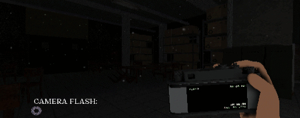
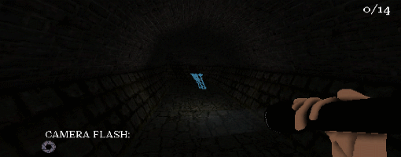
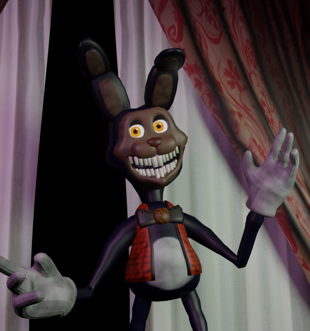
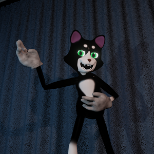
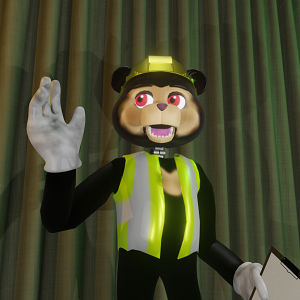

Bucky's Grounds is a first person Playstation X style
horror game where you uncover the mysterious disappearance
of the workers of Riverfall Initiative, all while collecting
chocolates, and avoiding the sweet toothed
rabbit who despises yellow light.
Story
Play as Mark, an employee at Riverfall Initiative, who has embarked on a
mission to uncover the dark truth of a mysterious town within another
dimension, Kanchoban. Children who go to the Kanchoban Playground never
come back, and the team sent out to search for them have dissappeared as
well without a trace. Meet Bucky, the rabbit mascot of the playground,
who welcomes everyone to play and have fun in his domain. However,
it seems things have gone awry in the playground, and Bucky and his
friends arent here to play anymore... They're hungry for another
victim, and you are their target...
Gameplay
Repel Bucky with your trusty flashlight when he goes on the hunt.

Collect Chocolates to get through the twisted playground.

Keep in contact with Ricky through your walkie talkie,
to stay updated on where you are within Khancoban.
Characters
Bucky

The tall energetic bunny with a massive sweet
tooth, and a distaste for yellow lights.
Marvin

The charasmatic but shy tuxedo cat,
who tends to play a little too rough.
Barry

The animatronic sun bear, focusing
on teaching to stay safe while you play.
Development
Bucky's Grounds originally started as a small project for a
short horror game. We've always found joy in giving
players polished horror experiences. We aimed to do the same
with the full game of Bucky's Grounds.
COMING TO STEAM SOON!
© 2023 Dizzy Hare Studios, All rights reserved.
For support, contact: kkirley547@gmail.com